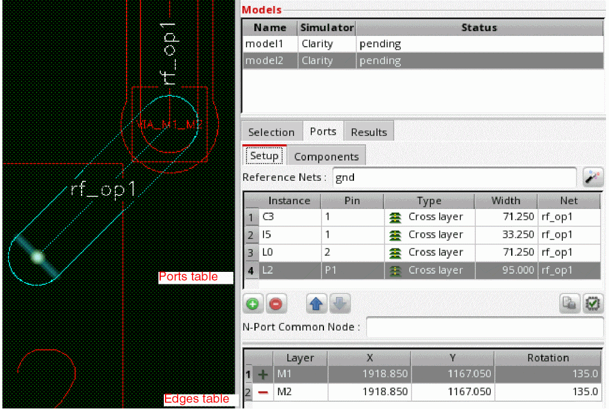
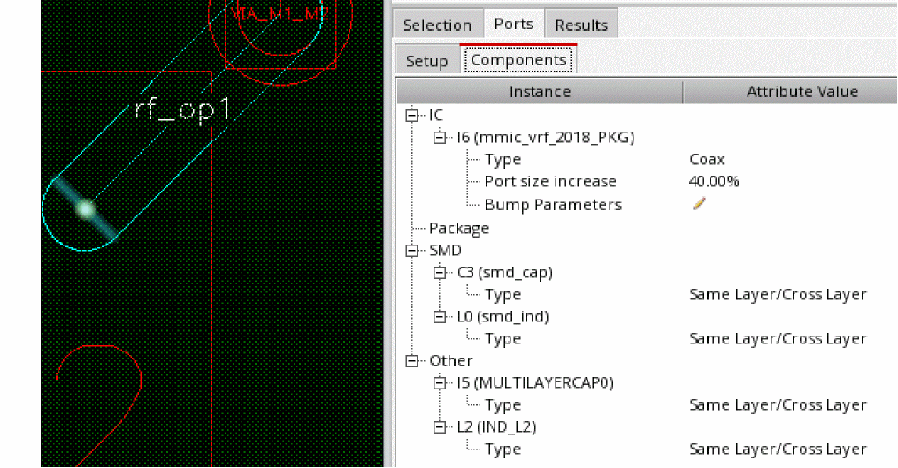

Specifying Ports for Clarity Models in Package Layout
The settings required for ports in a package layout are different from those in an IC layout. Therefore, the Ports tab for a package layout shows different fields.
For a package layout, you do not require die ground settings, so the Setup tab that appears to the left of Ports tab for IC layouts is not available for package layouts. The Ports tab contains two sub-tabs, Setup and Components.
To create ports for a package design:
- Select instances and nets to be included in the model.
- On the Setup sub tab of the Ports tab, specify a supply or ground net in the Reference Net drop-down list.
-
To automatically generate ports for the selected instances, click
(Automatically Generate Ports) to the right of Reference Nets.
Layout MXL populates both the sub-tabs in the Ports tab as described below.
In the Setup sub-tab, the tool identifies ports for the selected instances and loads their details in the table. For each port, the positive and negative edges are also shown.
The port width is automatically set to 95% of the wire width and the rotation is automatically set so that the port connects across the width of the wire. When you change the port rotation for the Cross layer Type, the rotation value for positive connection of the port is updated synchronously with the change in the rotation value for negative connection of the same port and vice-versa.
The Components sub-tab lists the instances connected to the nets you selected for a model.
 -
(Optional) On the Ports sub-tab, click
(Add Port) to create a new port.
For each port, two rows are added in the table below the ports table. These rows show the details of connections of the new port. By default, the X and Y coordinates of these connections are set to 0. - (Optional) Select a row in the ports table and click Move Connection at the bottom to move the coordinates. You can also modify the layer name for the edges.
-
Add the pin name and instance name for the newly added port.
- (Optional) If you do not want any port that was added, select its row and click (Remove Port) to delete that port.
- Use the following commands on the Setup tab to manage the ports:
- On the Components tab, review and configure the properties of the ports to be created depending on their instance type.
Port setup for the Clarity model is complete. You can check schematic binding or validate ports.
Related Topics
Ports Tab (Clarity with local reference)
Validating Ports Created for Clarity Models
Checking Schematic Bindings for Ports Created for EMX Models
Return to top